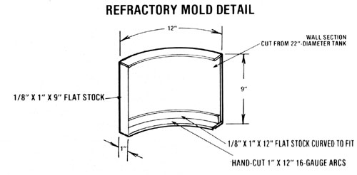
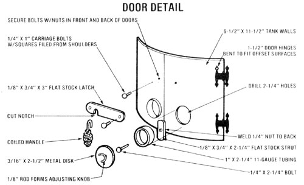
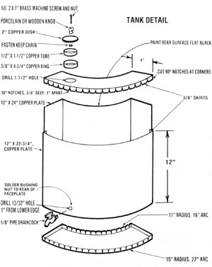

Mother's Compact Cookstove Heater
For as little as $50, you can build a woodburning appliance that does everything but wash the dishes!
By the Mother Earth News editors
November/December 1981
Some forty years ago, in the midst of the Rural Electrification Administration's "power to the people" campaign, woodburning cookstoves were being scrapped by the thousand in favor of modern and -admittedly-more convenient grid-fed electrical appliances.
Today, however, the old-timey ranges are enjoying a renaissance . . . and you'd be fortunate to latch onto a good one, new or old, for less than $500. In order to help you beat the high cost of cooking with wood (and partly as a result of the great number of unique, practical woodburner designs our staffers were exposed to during MOTHER's Scandinavian Crafts Tour earlier this year), we decided to have a go at building a stove that would provide an inexpensive baking oven and griddle, effective "local" heating, hot water, and a place to dry a day's worth of fuel.
PUTTING SCRAP TO USE
The attractive multipurpose cooker that MOTHER's Emerson Smyers put together is a combination of three nongalvanized scrap water heater tanks . . . one 20" and the others 22" in diameter. First, he laterally cut the top portions from the two similar-sized vessels, then rejoined those upper sections-top-opposite-top-with a 1/4"-plate cooking surface welded between. To prevent flue gases from entering the baking chamber (and to provide an impediment to smoke on its way out of the stack, thus retaining heat below and behind the oven, where it's needed most), Emerson fit a 16-gauge contoured baffle wall to the rear of the baking kiln. He allowed it to extend about 4 inches below the griddle plate, thereby creating a cres centshaped passageway that permits the exhaust vapors to exit between the stove's outer wall and the oven's rear bulkhead.
The entire stove capsule rests on a 23"-high pedestal cut from the third tank. This stand not only brings the oven to a practical working level, but also serves-now that an ellipse has been removed from its face and a retaining screen tackwelded in place- as a storage/drying bin for split wood or kindling.
(We're aware that many may question the prudence of placing such combustibles in close proximity to a heat source, but our testing has indicated that, with the oven operating at a steady 350°F and the ambient temperature in the mid-eighties, the storage area experienced a thermal increase of only 15° above the temperature of the surrounding air . . . which is sufficient to drive a bit of moisture from wood, but about 100° shy of actually igniting it. To be on the safe side, however, you should make tests of your own-under the conditions in which you're most accustomed to operating your stove-to determine whether the temperature will remain within accepted limits over an extended period. And, if any doubt still exists, play it safe by storing your kindling in a more conventional manner.)
To help prevent warping and joint fatigue in the firebox area-and to provide enough thermal mass to absorb and store warmth effectively-MOM's stovebuilder lined the base and walls of the burning chamber with a castable refractory (he used Paco Cast, manufactured by the North State Pyrophyllite Co., Inc., Dept. TMEN, P.O. Box 7247, Greensboro, North Carolina 27407 ... but any premixed refractory product should function equally well).
Protecting the firebox's bottom surface was simply a matter of pouring the loose "mud" into the concave base of the hearth to a depth of about 2 inches at the center . . . but-to form the wall blocks-Emerson had to cut a 9" X 12" flank section from the unused portion of one 22"-diameter water tank, weld a 1/8" X 1 " strip of flat stock onto one side of the contoured form, hand-trim two thin sheetmetal arcs and fasten them to the top and bottom edges of the same piece, tack a second 1/8" X 1 " strip to the curve's inner face at its lower lip, and use a greased block of wood to serve as the adjustable for-length fourth wall of the mold. By using this homemade template, our researcher guaranteed not only that the arc of each homemade firebrick would be compatible with the inside of his stove, but that the offset common to the upper seam of most water heating vessels would be accounted for.
The stove's doors and assorted hardware are detailed in the illustrations accompanying this article, but Emerson offers some additional construction hints: "The oven doors are cut, with a saber saw, directly from the walls and top of the stove . . . leakage through the small joint gap isn't a problem because the cooking chamber isn't exposed to smoke. The firebox doors, on the other hand, overlap the opening by 1/2" all around, and were cut from the lower section of one of the halved 22" tanks.
"The hinges are 1-1/2"Amerock cabinet pieces, but the sets on the lower door were carefully bent to fit the nonflush surfaces. Since we couldn't find suitable latch sets, I made my own with two short sections of 3/4" flat stock-each one notched to fit behind the head of a carriage bolt that I'd filed the square shoulder from-and installed a pair of heat dissipating coils to serve as handles. The draft controls are simply two 2-1/4" tube sections welded into the firebox doors and sealed with circular caps, each of which is-in turn-fastened to a threaded strut inside its vents with a 1/4" bolt."
HOT WATER AND A UTENSIL RACK, TOO!
Since Mr. Smyers wanted his stove to be as practical as possible, he went on to fabricate a five-gallon copper water tank that follows the contour of the heater's exterior for maximum heat transference. It rests on three L-shaped brackets and was made from a sheet of 16-ounce (one pound per square foot) dead soft copper.
To put the reservoir together, Emerson first cut a square-ended, curved pattern block from a piece of 3/4" plywood ... trimming its outer edge along the path formed by swinging a length of string along a 15" radius, and marking its inner boundary in the same manner, but using a radius 4 inches shorter to guarantee that the inside wall of the tank would rest close to the stove's skin.
Next, he cut out two curved plates of copper, each about 3/8" larger, all around, than is the template block itself . . . then trimmed a series of "pie slice" notchesan inch apart and 3/8" deep-in the arced sides of each plate. (The four remaining straight ends are not trimmed in the same manner, but 90° notches should be cut from their corners to assure a smooth fit after the skirts are folded.)
With this done, Emerson sliced out two 12"-wide sections of plate-one 22-3/4" and the other 24" in length-then folded the skirts on the four edges of the top and bottom sections and the two ends of the tank's faceplate, as in the drawing. He also made the appropriate bends, 4 inches in from the side borders, to form the narrow walls of the container.
Before soldering the vessel together, Smyers installed a spigot and a fill port. The cap was made from a 1/2" piece of 1-1/2" copper tube soldered to a 2" disk, and its receptacle is simply a strip of 3/8" X 4-3/4" copper formed into a circle and soldered over a 1-1/2" hole in the upper surface of the tank. A small knob and keep chain are fastened to the lid with a brass machine screw. The draincock has a 1/8" pipe thread and is held in place by a bushing nut secured to the back side of the container's faceplate.
Emerson points out that it's wise to position this drain orifice at least an inch above the bottom of the tank so there's always a bit of liquid left in the vessel . . . thus assuring that the reservoir will never get hot enough to actually melt its solder joints. Of course, since water heated in this tank could be used for hot beverages, the solder must be nontoxic ... and we discovered that the Inweld Manufacturing Corporation (Dept. TMEN, P.O. Box 631, Greenwich, Connecticut 06836-0631) makes an FDA-approved solder which is available in the company's Kit No. 330.
Finally, to carry the cooker's practicality one step further, the researcher surrounded it with a tubular copper utensil rack which stands away from the firebox, resting in a series of eyebolts. To bend this circular holder to shape, he first scribed a 25"diameter circle on a wooden work surface, then tacked small blocks of scrap wood every several inches along this ring to serve as a form around which he shaped 80" or so of 318" soft copper tubing. Once it's installed on the stove, of course, the eyebolt fasteners prevent it from expanding, so there's no need to secure the free ends of the ring to each other with anything more than a coupling.
ANOTHER JOB WELL DONE
After spending several days assembling the cookstove, you can be sure that Emerson was eager to see it do its stuff. So, after dressing it with several coats of heatresistant paint (and applying a layer or two of high-temperature flat black to the rear surface of the copper reservoir), he loaded the firebox with five pounds or so of split wood and kindling, put another 25 pounds in the lower storage bin, filled the copper tank with water, and set a blaze in the burner. The results were impressive: Not quite three-quarters of an hour later, the oven chamber was holding steady at just shy of 400°, and the stack temperature was in the same range. The reservoir of water reached a maximum of 180°, and-as he had suspected-the refractory mass absorbed enough heat (and subsequently held it in storage) to tone down the fluctuations in temperature which might otherwise render a woodstove's baking oven nearly useless.
In its heating mode, the unit does not, of course, operate as well as an appliance expressly designed to perform only that function, but it certainly is capable of warming an area the size of the average kitchen, and that's probably as much as anyone would hope for from a hybrid design such as this.
With everything taken into account, it'd be difficult to imagine someone in the market for a woodburning cookstove not giving Emerson's brain child some serious consideration. After all, what else could you make a dime-on-the-dollar (or less) investment in, and still get a world of practica l use from?
EDITOR'S NOTE: Those looking for an inexpensive woodburning heater should consider ordering MOTHER's $10 plans for such a device. See the ad on page 152. Furthermore, any person who burns wood should read the report on page 72.
|
 |
 |
 |
 |
|
|